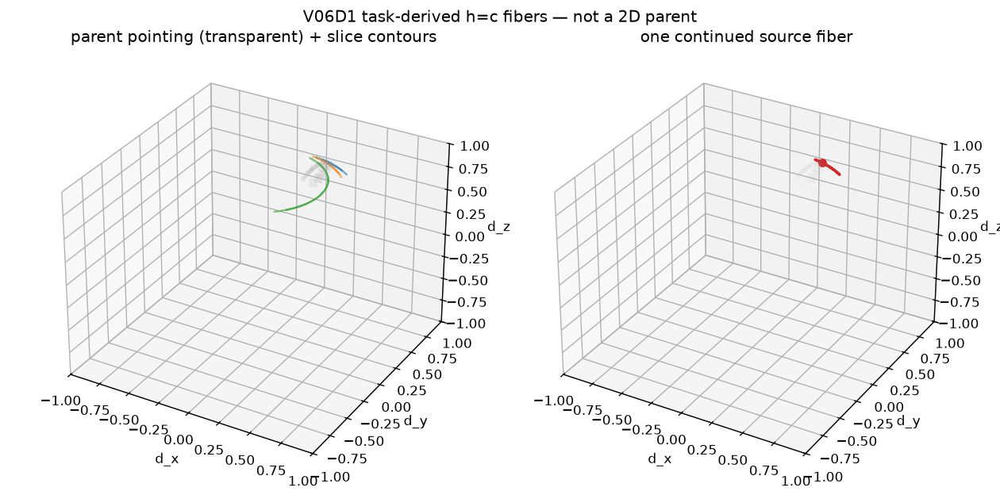

h(d)=n·d = c are
source evidence for a declared slice on a BUDGET_LIMITED atlas.
They are not parent completeness, not U_v, and not child reconstruction.
Not a complete foliation. Joint limits not_modeled.| n | (0.0, 0.0, 1.0) |
|---|---|
| ε_h | 0.0001 |
| regular vertices | 84 / 84 |
| slice values | 0.7273, 0.8003, 0.8734 |
| fiber count | 6 |
| complete foliation | False |
| fiber_id | c | branch | samples |
|---|---|---|---|
generic_5r_h0.7273_c0.7273_comp0 | 0.7273 | returned | 37 |
generic_5r_h0.7273_c0.7273_comp1 | 0.7273 | open | 81 |
generic_5r_h0.8003_c0.8003_comp0 | 0.8003 | returned | 37 |
generic_5r_h0.8003_c0.8003_comp1 | 0.8003 | open | 81 |
generic_5r_h0.8734_c0.8734_comp0 | 0.8734 | open | 81 |
generic_5r_h0.8734_c0.8734_comp1 | 0.8734 | open | 81 |

Reproduce:
PYTHONPATH=src python -m grashof_workspace.spatial_experiments.v06d1 --outdir results/kinematic_decomposition/v06d1